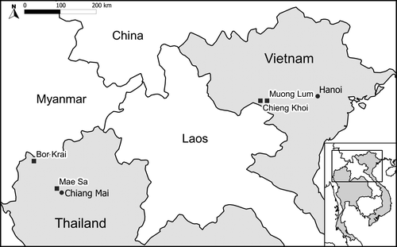

1.1 Introduction
The mountainous areas of Southeast Asia are undergoing rapid change. For centuries these areas were characterized by forests, isolation, and the presence of ethnic minority people who subsisted on rotational swidden agriculture. Although such conditions can still be found in certain places today, they are no longer representative of the situation across many of these areas. Forest areas have reduced, road networks have expanded into the mountains, and the younger generations of the ethnic minorities have increasingly moved to urban areas. In addition, traditional swidden agriculture has been replaced with intensified swiddening systems that use shorter fallow periods and also permanent fields, and farmers are increasingly using irrigation and agrochemicals—finding themselves a part of modern supply chains delivering raw materials and food to urban areas. This book provides an interdisciplinary account of the drivers and consequences, both positive and negative, of land use change in these mountainous areas, and of the technical and social innovations and policy strategies used to promote the positive effects of these changes, while at the same time trying to limit the adverse effects.
For such innovations and strategies to be sustainable, they need to find a suitable balance between the use and conservation of often fragile natural resources in mountainous areas. The great diversity of soils, climates, ecologies, ethnicities and human infrastructures that is typical of mountainous Southeast Asia complicates the attainment of such a balance. In addition, natural resources in upland areas are generally more prone to human-induced degradation than those in the lowlands. For instance, the intensification of agriculture on erosion-prone hills can easily lead to irreversible soil loss and permanently reduce productivity (Clemens et al. 2010; Wezel et al. 2002b; Dung et al. 2008), plus land use changes in mountainous areas can have secondary effects on lowland areas through water and matter cycle adjustments in the hydrological system. Because of these factors, there are usually no blanket solutions that can be applied to all locations, so instead, potential solutions have to be developed that can be carefully adapted to local conditions, in close participation with local people.
This book is based upon the findings of a long-term interdisciplinary research project undertaken by the University of Hohenheim in collaboration with several universities in Thailand and Vietnam over the period 2000–2014. Titled Sustainable Land Use and Rural Development in the Mountainous Areas of Southeast Asia, or the Uplands Program, the project’s aims have been to contribute, through agricultural research, to the conservation of natural resources and an improvement in living conditions among the rural population in the mountainous regions of Southeast Asia (see Heidhues et al. 2007). An important feature of the project has been the very broad range of research carried out into various aspects of mountainous systems, including soils, water and matter cycles, plant production, pig husbandry and aquaculture, as well as farm management systems, markets, institutions, societies and policies.
Conceptually, the research program builds on the concepts of sustainability, interdisciplinarity and participation. By sustainability, we mean the capacity of mountainous land use systems to maintain their economic, social and ecological states, processes and functions, including maintaining their agricultural productivity and biodiversity levels, plus their provision of ecosystem services. Sustainability in economic terms means that land use systems must not only be able to uphold livelihoods in mountainous areas, but also adapt to changing economic and environmental conditions, adopt new technologies and take into account demographic change. Thus defined, the research undertaken by the program has required an interdisciplinary approach to be taken, in order to address sustainability in a meaningful way.
Acknowledging the diversity of conditions in mountainous areas in general and the accompanying need to adapt potential solutions on a local scale, researchers agreed at the outset of the project to use participatory research methods wherever possible and meaningful (Neef et al. 2006; Neef 2008). While in conventional agricultural research, innovations are developed by researchers and then transferred to extension services and farmers, participatory research tries to involve users at every stage of the innovation process - from design through to implementation, which is recognized to be a more efficient and more effective way of conducting agricultural research (Hoffmann et al. 2007). Neef and Neubert (2011) noted; however, that participatory methods are not equally suitable and appropriate for every type of agricultural research; hence, the aim of the Program has been to optimize rather than maximize the use of such methods.
1.1.1 Objectives and Outline of the Book
The objectives of this book are threefold. First, it aims to give an interdisciplinary account of the drivers behind as well as the consequences and challenges of ongoing changes taking place in the mountainous areas of Southeast Asia. Second, the book describes how innovation processes can contribute to addressing these challenges, while third, it describes how knowledge creation can support change in policies and institutions, those contributing to the sustainable development of mountainous areas and the livelihoods of the people who live there.
The book is organized into three parts. The first part deals with the consequences of the transformation of mountainous areas in Southeast Asia in terms of environmental and social challenges. Agricultural intensification in these areas has changed land use patterns and water cycles, and has increased agrochemicals use and intensified the erosion of mountain slopes, both of which have in turn affected the livelihoods of people living in these areas and their level of access to resources. The four chapters in this first part each describe one major development challenge.
In Chap. 2, Stahr et al. describe how to better plan land use by taking into account soil and terrain information, in order to allow for the sustainable intensification of agriculture in mountainous areas. They describe their experiences with various methods of collecting soil and terrain information in mountainous areas, ranging from a low-tech method of participatory soil mapping involving farmers, to a high-tech method using gamma-ray spectrometry. Although they show that gamma-ray spectrometry is particularly useful when wishing to create spatial soil data for inaccessible mountainous terrain, they conclude that the various methods are actually rather complementary.
In Chap. 3, Fröhlich et al. take a dynamic perspective on the interplay between soil and water resources, and describe how land use intensification has dramatically altered the cycling of water and matter (such as plant nutrients and sediments). They pay particular attention to how changes in land use affect the spatial and temporal redistribution of sediments and nutrients from hillsides to valleys through processes of erosion and sedimentation.
Lamers et al. in Chap. 4 show that land use intensification in mountainous areas—particularly the change from subsistence to cash crops—has been accompanied by a dramatic increase in the use of synthetic pesticides. They show the high level of risk arising from pesticide use, because local farmers have only limited knowledge about the correct use of such pesticides and because steep slopes, high and intense rainfall and the presence of well-developed preferential flow pathways, mean that a relatively large volume of pesticide residues is transported from the site of application to adjacent environmental compartments.
In Chap. 5, Saint-Macary et al. look at the socio-economic aspects of land use intensification, focusing on the nexus of agriculture, natural resource use and poverty. They show that poverty is an important constraint on the ability of households to invest in soil conservation practices, and that improving market access for poor households is important in terms of reducing poverty and supporting the more sustainable use of natural resources. However, the authors argue that this approach needs to be combined with policies that protect the quantity and quality of natural resources available.
Having described these often daunting challenges, the second part of the book describes a selection of the technology-based innovation processes used to address some of them. The three chapters in this part describe innovations introduced with respect to fruit production, soil conservation and aquaculture.
In Chap. 6, Spreer et al. explain that commercial fruit production requires intensive irrigation and that while northern Thai farmers have managed to produce and export increasing quantities of longan and mango fruit, water supplies have become increasingly scarce and unreliable. They compare the effects of various irrigation techniques and irrigation schedules on fruit yields and economic returns, and in particular show that there is the potential, so far unexploited, for farmers to use plant water stress indicators to optimize their crops’ water and nutrient supply.
In Chap. 7, Hilger et al. show that various common soil and water-saving technologies—including agroforestry, alley cropping, contour cultivation using ridges, the use of cover crops, crop rotation, grass barriers, hedges and hedgerows, plus minimum tillage, mulching and terraces—have the potential to contribute to a more sustainable cultivation of sloping agricultural land. As compared to conventional cropping systems without such controls, these practices significantly reduce runoff from sloping land and improve the water holding capacity of the soil, and they also tend to increase crop yields, but this effect does not show for all methods immediately after adoption. Despite this, the use of these methods remains infrequent, in spite of the fact that they are widely available and farmers are generally aware of soil fertility decline when it occurs. The challenge for soil conservation is therefore not only a technological challenge of identifying appropriate methods, but also a socio-economic challenge in terms of addressing adoption constraints.
In Chap. 8, Pucher et al. describe the aquaculture production system of a Black Thai community in northwestern Vietnam, which is a significant source of nutrition and income for local households. They show how the productivity of the grass carp grown by the Black Thai is constrained by the availability and use of quality feed resources and the incidence of fish disease, but identify an opportunity to improve productivity and increase sustainability by enhancing the production of natural food in fish ponds and introducing the use of supplemental feed such as earthworms, that can be easily produced on the farm.
The third part also focuses on innovation processes, but from the policy and institutional perspective rather than the technological solution point of view.
Chapter 9, by Neef et al. discusses the potential and limitation of using participatory methods, such as participatory rural appraisal and multi-stakeholder knowledge and innovation partnerships, to improve the effectiveness of research in mountainous areas. A review of lessons learned from pilot projects in Southeast Asia suggests that Payments for Environmental Services (PES) may face a number of challenges in the particular context of Thailand and Vietnam. The case of a litchi processing and marketing network in northern Thailand shows the importance of forging strong alliances with private and public actors and of fostering experiential learning and the convergence of expectations among all stakeholders when trying to develop pro-poor and pro-environmental value chains.
In Chap. 10, Marohn et al. compare seven alternative modeling approaches based on their ability to represent the complexity of biophysical systems and farm decision-making processes, which seems particularly important with regard to mountainous systems, as these are typically diverse in terms of resource and socio-economic conditions. They focus on an innovative software coupling approach that combines a process-based biophysical model of plant growth, soil and water dynamics, with an agent-based model of farm household decision-making, finding that such an approach is suitable for studying; for example, how farm households in the uplands of Vietnam respond to a long-term decline in soil fertility by adjusting fertilizer use and/or adopting soil conservation methods.
In Chap. 11, Schad et al. describe the dynamics of change taking place among the agricultural knowledge and information systems used in the uplands of Vietnam since the start of economic liberalization at the end of the 1980s. They observe that extension approaches have become much more diverse in terms of the methods used as well as their objectives, yet the traditional focus on technology transfer to farmers has been maintained. The authors describe the concept of the Ethnic Farmer Research and Extension Network (EFREN), which is a network approach aimed at creating closer and more equal relationships between the developers and users of agricultural knowledge and innovations. They show that this approach is more responsive to the diverse needs of farmers than the traditional top-down extension methods commonly used.
Zeller et al., in Chap. 12, describe how the increased integration of upland agriculture into input and output markets has had an impact on poverty, agricultural productivity and economic risk. They conclude that the process of agricultural commercialization has contributed to higher incomes in the uplands of Thailand and Vietnam, but that policy makers must play a more crucial role in helping to reduce the negative impacts of these developments on the environment and ensure that poor people are able to benefit from the process as well.
Although this book is quite comprehensive in terms of the issues it discusses, some readers will find that certain important issues are not given adequate attention. First, as the focus of the book is on agriculture and agricultural development, forest issues and natural ecosystem biodiversity receive little attention, though they are essential for the sustainability of mountainous areas. Second, the book builds on field research carried out in the highlands of Thailand and Vietnam, areas selected for their representation of contrasting institutional and market access situations in mainland Southeast Asia, but does not cover the whole range of issues present in these areas and; therefore, is not able to make generalizations regarding the whole of the region. Laos, Myanmar and Cambodia are much poorer than Thailand and Vietnam, and their mountainous agriculture has not intensified to the same extent as in these two countries. Third, while Southeast Asia is extremely diverse with respect to culture and languages, ethnicity and society, the book pays only scant attention to these topics, because our research did not have an anthropological component. Fourth, the innovation processes discussed in the book, focusing on water management, soil conservation, fruit trees, aquaculture and extension services, are far from being exhaustive, and so should be seen as mere examples. Innovations in agroforestry, integrated pest and nutrient management, and crop-livestock systems, can be important for mountainous areas, but are not extensively dealt with here.
1.2 Study Areas in Thailand and Vietnam
The research in this book focuses on mountainous areas in Thailand and Vietnam, representing two contrasting cases at different levels of development and market access, and with different institutional settings. Thailand has a multi-party democracy and strong market institutions, whereas Vietnam in contrast has a single party system and has only recently allowed private enterprise to become established in parts of its economy. Population growth has slowed in both countries over recent years, but in Vietnam the growth rate of 1.2 % per year is still double that of Thailand, as can be seen from Table 1.1. As Vietnam’s economic development has been much more recent, so the poverty rate is higher than in Thailand, but more recently has declined considerably. These general statistics are; however, not representative of the situation in mountainous areas. For instance, Minot et al. (2003) estimated that population growth in Son La province was 2.2 % in 2,000 and reported an 81 % poverty rate in rural areas of the province. Zeller et al. in Chap. 12, also confirm that upland households have a much higher rate of chronic poverty than lowland households.
Table 1.1
General statistics for Thailand and Vietnam
Statistic | Thailand | Vietnam |
|---|---|---|
Population (million)a
| 67.8 | 88.1 |
Population growth (annual %)b
| 0.6 | 1.2 |
Poverty headcount ratio at USD 2 a day (PPP) (%)c
| 11.5 | 48.4 |
Employment in agriculture (%)d
| 41.7 | 57.9 |
Arable and permanent crop land (million ha)e
| 18.9 | 9.4 |
Forest area (million ha)f
| 19.0 | 13.7 |
Very steep slopes (>30 %) (% of land area)g
| 26 | 33 |
Much of the research presented in this book is based on field data collection carried out over four sites, these being the Mae Sa watershed and the karstic area around Bor Krai village in northern Thailand, and the Chieng Khoi and Muong Lum sub-catchment areas in north-western Vietnam, as shown in Fig. 1.1. The general statistics for these sites are shown in Table 1.2.

Fig. 1.1
The location of the four main research sites (squares) in Thailand and Vietnam
Table 1.2
Comparison of the four research sites, in Thailand and Vietnam
Statistic | Thailand | Vietnam | ||
|---|---|---|---|---|
Bor Kraia
| Mae Sab
| Muong Lumc
| Chieng Khoid
| |
Type of delineation | Village (8.5 km2) | Watershed (77 km2) | Sub-catchment and commune | Sub-catchment and commune |
Settlement characteristics
| ||||
Main ethnicities | Lahu | Hmong, Thai | Black Thai, Hmong | Black Thai |
Villages | 1 | 12 | 9 | 5 |
Farm households | 60 | 1,490 | 436 | 471 |
Household size (persons) | 5.7 | 5.1 | 5.2 | 4.9 |
Children (% population) | NA | 24 | 34 | 22 |
Farm size (ha) | 4.1 | 1.6 | 1.2 | 1.7 |
Topography and edaphic conditions
| ||||
Elevation (m.a.s.l.) | 550–1,020 | 616–1,540 | 780–1,320 | 410–975 |
Soils | Luvisols, Acrisols, Cambisols | Acrisols, Cambisolsf
| Luvisols, Alisols | Luvisols, Alisols |
Lithology | Limestone | Granite, gneiss | Limestone, clayey shale, alluvial sediments | Sandstone, claystone |
Climate
| ||||
Mean Rainfall (mm/year)e
| 1,178 | 1,210 | 1,189 | 996 |
Mean annual temp. (°C)e
| 21.3 | 21.6 | 21.3 | 23.3 |
Land cover
g
| ||||
Forest (% of total area) | 67.9 | NA | 53.4 | 29.7 |
Paddy (% of total area) | 0.1 | 0.02 | 14.2 | 3.5 |
Land cover changeh
| – fallow | + non-ag. land use | + upland fields | + upland fields – forest |
– forest, – fallow | ||||
Farming
| ||||
Irrigated (% ag. land) | 0 | 79 | 20 (paddy) | 16 (paddy) |
Main subsistence crops | Upland rice | Some paddy rice | Paddy rice, upland rice, vegetables | Paddy rice |
Main cash crops | Maize, squash | Litchis, cabbages, flowers, bell peppers, chayote | Maize, cassava | Maize, cassava |
Main livestock | Pigs (major), chickens | Pigs, chickens (minor) | Aquaculture, cattle, buffalos, chickens, ducks, goats, pigs | Aquaculture, cattle, buffalos, chickens, ducks, goats, pigs |
Bor Krai village (located in Pang Ma Pa district, Mae Hong Son province) is situated in a relatively remote limestone area in Thailand, where farmers grow maize and squash as cash crops and upland rice for home consumption, though their cash income is mainly derived from pig husbandry. In terms of land ownership, none of the farmers has land titles, as the village is located in a forest conservation area. The farmers practice swidden agriculture, but fallow cycles have reduced from 4 to 5 years during the 1990s, to 2–3 years at present. Pest problems, particularly weeds, have intensified recently, and so farmers have started to use herbicides. In 2008, a large agro-industrial company, Charoen Pokphand or ‘CP’, introduced maize contract farming to the village, under which it provides hybrid maize seeds, fertilizers and pesticides to the farmers, who then have to sell their products to the company at a guaranteed price. In spite of the greater reliance on external inputs, the villagers say they prefer the new system because it gives them higher yields, saves labor and allows them to earn a higher income. Since introduction of the hybrid maize, some farmers have reduced their fallow periods to 1 or 2 years only.
The Mae Sa watershed, which is located in Mae Rim district, Chiang Mai province in Thailand, has intensive commercialized upland agriculture. The watershed overlaps with Suthep-Pui National Park, but agriculture is allowed on those plots that were already used before the Park was established in 1986. The watershed contains people from the Thai ethnic majority who live across five villages mostly located in the central valley, as well as people from the Hmong ethnic minority who live in seven villages located in the mountains. None of the Hmong farmers hold secure and transferable titles over their agricultural land, but 54 % of the Thai farmers do, in spite of the fact that both groups have most of their fields inside the National Park. While research previously carried out in Vietnam showed that the study farmers did not invest in soil conservation practices because of insecure land titles (Saint-Macary et al. 2010), this has not been a significant impediment to land use intensification in the Mae Sa area, as 79 % of the agricultural area is irrigated and farmers grow a diversity of cash crops such as litchis, as well as vegetables such as cabbages, lettuce and chayote, plus ornamental flowers (chrysanthemums and roses) and greenhouse vegetables (bell peppers and tomatoes). (See Neef et al. 2000 for a comparison of the land tenure security that exists in the mountainous areas of Thailand and Vietnam). Farmers in the study area are well-integrated into modern supply chains (Schipmann and Qaim 2010, 2011) and use many fertilizers and pesticides (Schreinemachers et al. 2011). About a third of the households in the watershed are not engaged in farming, while 58 % of the farm households perform paid work outside their own farm. In turn, almost all farm households (92 %) hire agricultural labor, the majority of which is of Shan ethnicity. Much of the research carried out so far into fruit production, including off-season litchi production and fruit tree irrigation, fruit processing (including fruit drying) and post-harvest innovations, has taken place in the Mae Sa watershed area.
In Vietnam, the research studied two communes in Yen Chau district (Son La province). The Muong Lum sub-catchment represents a relatively remote area, one that is difficult to access by road. It is located at a high altitude (700–1,100 m.a.s.l.) and is a limestone area with clay shale and alluvial sediments. Of the nine villages in the sub-catchment, five are inhabited by the Black Thai ethnic group and four villages, located at higher altitudes, are inhabited by the Hmong. Birth rates are relatively high and nearly half the population is below the age of 20 (Dang et al. 2008). The amount of land per household is relatively small at 1.2 ha. Between April 2008 and January 2009, 67 households were moved to the commune from the area impacted by the Son La hydropower project, and this increased the population by 13 % and aggravated the problem of land scarcity (Bui and Schreinemachers 2011; Bui et al. 2013). The Black Thai farmers in Muong Lum grow paddy rice, while the Hmong farmers mostly grow upland rice, and in addition, farmers keep livestock for their own consumption and grow maize for sale. The possibility of growing higher value crops is limited because of the inaccessibility of the commune.
The Chieng Khoi sub-catchment, on the other hand, is located nearer to the district center of Yen Chau. The sub-catchment is situated in a rift valley (called a graben), which can be divided into a northern and a southern part. The northern part has a lower altitude (400–545 m.a.s.l.) and is characterized by steep hills and a valley which is used for agriculture, with soils (Alisols and Luvisols) derived from cretaceous red beds and alluvial deposits (Clemens et al. 2010). The southern part is extremely steep, rising up to 975 m.a.s.l., and is made up of limestone rock and covered with primary forest (ibid.).
Farmers in Chieng Khoi grow paddy rice intensively for their own consumption, using large amounts of fertilizers and pesticides. To generate cash income, they practice the mono-cropping of maize on the mountain slopes surrounding the village, and to intensify this maize production they have adopted high yielding maize varieties, use mineral fertilizers and plow their sloping fields with buffalos. Some of the fields are already eroded so badly that maize cultivation is no longer possible. Where soil fertility is low, farmers prefer planting cassava, which is frequently intercropped with maize. Farmers were previously given user rights over their paddy land and sloping land for a period of 20 years, as specified in a so-called ‘red-book’, plus were given individual user rights over the nearby forest land for a period of 50 years. Livestock are an important source of food as well as cash income, plus households raise fish in ponds, and keep cattle, pigs, ducks and chickens.
1.3 Drivers of Land Use Change in the Mountainous Areas of Southeast Asia
The intensification of agriculture in mountainous areas and its integration into input and output markets has largely been driven by four interrelated processes: economic development, policy change, new technologies and population growth, each of which is described in the following section.
Thailand since the early 1980s and Vietnam since the late 1980s have been through rapid economic development, driven largely by export oriented manufacturing, but also by export oriented agriculture. In both countries, this economic growth has led to a significant reduction in poverty and a concomitant increase in the purchasing power of the population (see Kakwani and Krongkaew 2000 for Thailand; Minot and Baulch 2005 for Vietnam).1 Although urban centers and lowland areas have been at the center of this development, it has had profound impacts on mountainous areas, through an increased demand for food, fodder and other raw materials, plus an increase in labor opportunities in urban areas (Minot et al. 2006).
Changes in policy have facilitated or driven these economic developments, while economic development has, in turn, also facilitated policy change. For instance, the de-collectivization of agriculture in Vietnam with the passing of Resolution 10 by the Communist Party in 1988, shifted farm decision-making from the collective level back to the household level, thus recognizing that collective control had been steadily eroding since the mid-1970s (Saint-Macary et al. 2010; Sikor and Truong 2002). De-collectivization, together with the lifting of barriers to private trade and improvements in the road infrastructure, has allowed farm households in mountainous areas to intensify their production (Muller and Zeller 2002); however, forest conservation has become increasingly prominent in both Thailand and Vietnam, as well as in the other countries of Southeast Asia, and these countries’ governments have demarcated conservation areas, while discouraging farmers from practicing swidden agriculture (Forsyth and Walker 2008; Fox and Vogler 2005). This has been accompanied by the promotion of permanent field agriculture and attempts to intensify cultivation through the introduction of high value crops (Minot et al. 2006).
The introduction of new technologies has been the third driver of land use change in mountainous areas over recent years. Few external inputs are used in traditional swidden agriculture, but where agriculture has intensified this has been accompanied by the introduction of new seeds and mineral fertilizers and pesticides, as well as irrigation equipment in some areas such as sprinklers, and mechanization in the form of hand-held tractors and rice mills. Sikor and Truong (2002), and Muller and Zeller (2002), described how in the absence of new technologies, land use in the mountainous areas of Vietnam became more extensive during the 1970s and 1980s, but then intensified in the 1990s when farmers started using fertilizers and improved seeds, and the amount of available land became more limited.
Population growth is the fourth driver of land use change in mountainous areas, as it has led to increased land scarcity, which in turn has created a need to intensify land use and shorten traditional fallow cycles (Nikolic et al. 2008; Wezel et al. 2002a). Shorter fallow cycles and the more intensive tillage of mountain sides can rapidly deplete soil fertility, as soils easily erode from the steep terrain. This is accompanied by increased topsoil disturbances under conditions of heavy rainfall, leading to a downward trend in terms of crop yields. This situation has the potential to create a vicious circle of lower productivity, lower incomes and food insecurity, and a subsequent need to further shorten fallow cycles (Pandey and van Minh 1998; Ziegler et al. 2009). However, because of the three other drivers of land use change, actual incomes have generally increased and poverty has declined, as farmers have been able to obtain better prices, adopt improved crop varieties and fertilizers, and earn cash by working outside their own farms (Minot et al. 2006; Sikor and Truong 2002).
1.4 Challenges to the Sustainable Development of Upland Agriculture
As a consequence of these four drivers, farming systems in the mountainous areas of Thailand and Vietnam have been transformed from near subsistence systems—growing upland rice and sometimes opium poppies (Papaver somniferum) and using swidden agriculture with long fallow periods, to commercial farming systems—using external inputs to intensively grow cash crops such as maize, vegetables, fruits and flowers (Table 1.3). This change in land use has been accompanied by technological change and the monetization of labor relationships. For instance, through the process of agricultural commercialization, labor sharing arrangements that are common in subsistence agriculture have been increasingly replaced by wage labor and contract farming arrangements, with household members also increasingly engaged in off-farm work.
Table 1.3
Characterization of farming systems by level of agricultural commercialization
Characteristics | Agricultural commercialization | |||
|---|---|---|---|---|
Near subsistence | Semi-subsistence | Semi-commercial | Commercial | |
Land use system | Swidden agriculture with long fallow cycles and burning to clear soil and release nutrients | Intensified swidden agriculture with shorter fallow cycles requiring fertilizers | Intensified swidden systems and permanent fields on hillsides with irrigation | High fertilizer use, permanent cropping systems, irrigation and greenhouses |
Subsistence crop | Upland rice (many varieties) intercropped with various other crops | Upland rice with fewer other crops | Upland/paddy rice | — |
Cash crops | — | Maize, cassava, tea and coffee | Cabbages, pumpkins, tea and coffee | Vegetables, fruit trees, tomatoes and flowers |
Farm labor | Household and labor sharing | Household and labor sharing | Household labor and hired labor | Hired labor and household labor |
Economic studies have shown that commercialization and market integration, which generally mean a diversification of agriculture away from rice, have led to a reduction in poverty and greater levels of economic well-being among households (Minot et al. 2006; Tipraqsa and Schreinemachers 2009; Zeller et al. in Chap. 12), yet each stage of the commercialization process also has its challenges, as shown in Table 1.4. For instance, as farmers engage in high-value crop production they are increasingly exposed to price variability and social risks (Fischer and Buchenrieder 2009; Sricharoen et al. 2008) or environmental risks from unabated soil fertility loss (Wezel et al. 2002a; Schmitter et al. 2011; Schad et al. 2012). We describe these challenges in more detail in the following sections.
Table 1.4
Sustainability challenges by level of agricultural commercialization
Challenges | Agricultural commercialization | |||
|---|---|---|---|---|
Near subsistence | Semi-subsistence | Semi-commercial | Commercial | |
Sustainable use of soil and water resources | Low anthropogenic soil loss; recovery of soil infiltration capacity after short periods of cultivation | Topsoil structure starts to deteriorate with surface erosion; changes in water flow paths towards overland flows | Building of reservoirs to allow dry season cultivation. Change in storm runoff dynamics. Irreversible soil fertility loss in absence of soil conservation measures | High irrigation water use and water quality issues; reservoir management essential for year-round irrigation water supply |
Risk of synthetic pesticides | No pesticides. Rotations, burning and the use of multiple rice varieties help control pests | Herbicides as weed problems intensify | Herbicides, insecticides | Intensive use of mostly fungicides and insecticides; pesticide resistance |
Poverty, agriculture and sustainable resource use | Not much is sold and cash is mostly generated through off-farm labor | Cash crops affected by price risk; storage can help to manage this for some crops | Financial risk emerges from the need for short-term credit. Contract farming could be an option to manage risk | High economic risk can give high profits, but can also lead to bankruptcy if not managed well |
1.4.1 Sustainable Use of Soil and Water Resources
Mountainous areas in mainland Southeast Asia are characterized by the presence of fragile natural systems with steep slopes, high rainfall intensities, seasonally dry periods and naturally erodible soils (Sidle et al. 2006). Due to these conditions, land use change and land use intensification can change the quality and dynamics of soil and water resources in various ways (Ziegler et al. 2009), and these soil and water dynamics are intricately linked. Being rich in organic matter, topsoil contains a significant proportion of the nutrients and carbon necessary for plant growth, and is therefore essential for agricultural production and for a stable soil structure that can withstand erosive storm events with a limited breakdown of soil aggregates. Soil sealing occurs when this structure is disturbed through increased tillage, as the impact of rain drops disperses soil particles, which in turn fill pores on the soil surface, rendering the soil relatively impermeable to water and leading to increased surface runoff which in turn can lead to the detachment and erosion of matter, including nutrients and soil organic matter. The disturbance of the topsoil also fastens the mineralization of organic matter, decreasing the structural stability of the soil. Other off-site effects of erosion include reservoir siltation and the downstream sedimentation of arable land (Clemens et al. 2010). Changes in the water runoff pathways within a watershed also alter stream flow responses and stream water quality, as discussed in Fröhlich et al. (Chap. 3). In addition, road construction and logging—which also accompany the process of agricultural intensification, can reduce the strength of wetted soils on sloping lands and increase susceptibility to shallow landslides (see Ahlheim et al. 2010).
Dung et al. (2008) measured an average annual amount of soil loss of 20 Mg/ha in the cultivated fields of Hoa Binh province in northern Vietnam, as compared to < 1 Mg/ha in fields under secondary forest fallow. Comparing forest land with arable land in north-western Vietnam, Haering et al. (2010) found that the conversion of forest land to arable land reduced organic matter content by 66 %, nitrogen by 67 %, phosphorus by 75 %, cation exchange capacity by 56 % and raised soil compaction by 40 %.
Clemens et al. (2010) found that farmers in north-western Vietnam were generally aware that more intensive maize cultivation increases erosion and reduces crop yields, but they found that farmers tended to underestimate these impacts. Saint-Macary et al. (2010) found that most farmers in the same area knew about methods of soil conservation, but found them economically unattractive. Using simulation modeling, Marohn et al. (in press) confirmed that soil conservation methods tended to be unattractive for farmers under existing economic conditions, but showed that they became more attractive as the prices of mineral fertilizers rose.
Moderate levels of sediment flow from upper to lower slope positions in the landscape may benefit the lower slopes by providing additional nutrients (Schmitter et al. 2011), but severe soil erosion leads to the accumulation of eroded infertile subsoil material in the lower slope positions, that which may no longer support intensive agricultural production (Clemens et al. 2010).
As natural systems are complex in their behavior, the effects of land use change depend on a multitude of processes and site specific characteristics with various spatial and temporal dimensions (Phillips 2003). Hence, similar conditions and processes may develop in different ways and adjust to multiple states at varying times and on different scales (Bruijnzeel 2004). As a consequence, it is difficult to generalize regarding resource stock changes that occur due to land use change and intensification; it also complicates the definition of what is environmentally sustainable. Simplified narratives of causes and effects can be influential, but not necessarily conducive to addressing the problem of conserving natural resources (Forsyth and Walker 2008).
1.4.2 Limiting the Risk of Synthetic Pesticides
Few synthetic pesticides are used in near-subsistence farming, as intercropping, crop rotations, long fallow periods and the use of multiple varieties help to control weeds and insect pests and any other plant health problems, while fallow and forest areas provide habitats for the natural predators of insect pests. Land use intensification in the mountainous areas of Southeast Asia has tended to be accompanied by more intense pest problems (Wezel 2000; Roder et al. 1995; Pandey and van Minh 1998), leading to an increase in synthetic pesticide use in order to manage these problems. A study comparing gross crop margins to levels of synthetic pesticide use in northern Thailand by Schreinemachers et al. (2011), showed that a 10 % increase in gross crop margins was associated with an 8 % increase in pesticide use.
As upland farmers in some areas have moved from near-subsistence to commercial agriculture within one or two decades, the rate of increase in pesticide use has been rapid, while knowledge about the adverse impacts of pesticides on ecosystems and human health has remained limited. In addition to their geophysical and hydrological characteristics, this lack of knowledge makes mountainous areas particularly vulnerable to the risks of incorrect pesticide use. Studying pesticide pollution in upland paddy rice systems in Vietnam, Lamers et al. (2011) showed high levels of environmental and human risk exposure related to pesticide residues.
1.4.3 Poverty, Agriculture and Sustainable Resource Use
In spite of strong economic growth in Thailand and Vietnam and significant reductions in poverty rates, widespread poverty persists, especially in mountainous areas. Surveying nearly 300 households in the Yen Chau district of north-western Vietnam over 2 years, Zeller et al. (in Chap. 12) classified 41 % of the upland households as chronically poor, but only 3 % of the lowland households. As the average rate of chronic poverty for the district was 8.4 %, it shows that the average hides important variations between upland and lowland households.
Poor households have less access to formal credit sources and on average pay higher interest rates on loans (Saint-Macary et al. in Chap. 4), and are also more at risk on average than wealthier households, plus have a higher discount rate (that is, a stronger preference for current over future income). As a result, poorer households are less interested in making the long-term investments necessary in order to sustain their natural resource base; for instance, by applying soil conservation techniques. The challenge for sustainable agriculture in mountainous area is to balance the pressing need for improved livelihoods among the upland population with the equally pressing need for a sustainable use of natural resources.
Giving poor households an economic incentive to sustain natural resources; therefore, requires targeted pro-poor programs to be introduced by governments, or alternatively well-designed market-based mechanisms such as payments for environmental services. Zeller et al. (in Chap. 12) showed that pro-poor programs, as implemented in Vietnam, need to be targeted more effectively, as wealthier households at present receive more support than poorer households. Market-based mechanisms might therefore be an interesting way to complement such programs, as rewards can be linked directly to the provision of ecosystem services by the poor (Ahlheim and Neef 2006; Neef et al. in Chap. 9).
1.5 Finding Solutions Through the Creation of Knowledge and by Developing and Adapting Innovations
The research carried out so far by the Uplands Program can be roughly divided into research aimed at developing and testing innovations, and research aimed at creating knowledge about land use systems, though combinations of the two have occurred such as research into the local adaptation of technologies, and into the knowledge and innovation partnerships developed between researchers and stakeholders. However, we will use this division in the following section in order to give an overview of the contributions the Program has made to date.
1.5.1 Innovation Development
Researchers at the Uplands Program have developed, tested and adapted various innovations, as illustrated in Table 1.5, those intended to promote more sustainable land use in mountainous areas. In Thailand, much of the effort has been focused on fruit tree production, as fruit trees are economically important in northern Thailand, and growing trees on mountain slopes is environmentally more sustainable than growing annual crops, as trees are more effective at preventing erosion, regulating the flow of rainwater and maintaining biodiversity (cf. Bruijnzeel 2004).
Table 1.5
Examples of innovation developments introduced by the uplands program in Thailand and Vietnam
Innovations | Objectives | Main outcomes |
|---|---|---|
In Thailand
| ||
Artificial flower induction (Bangerth 2006) | To reduce irregular bearing and improve the average farm gate price by artificially inducing flowering in litchi trees | Advances have been made to understand hormonal processes in litchi trees, but a practical method for AFI has not been found |
Optimization of fruit drying (Precoppe et al. 2011) | To add value to litchi fruit by processing fresh fruit within the community using a locally available dryer that is optimized to local conditions | A fruit dryer has been optimized and farmers in two communities have successfully dried litchis and even exported dried litchis to Europe |
Greater irrigation efficiency (Spreer et al. 2009) | To reduce the irrigation water used in mango production through the use of partial root zone drying | Innovation was shown to be successful both in greenhouse experiments and under field conditions |
Soil and water conservation on sloping land (Hilger et al., in Chap. 7) | To make highland production systems more sustainable by integrating cover crops and mulching methods, plus introducing fruit trees on sloping land | Yield advantages were shown to be very substantial as compared to conventional practices and the method was extended to several communities |
In Vietnam
| ||
Improving the performance of local pig breeds (Lemke and Valle Zárate 2008) | Improving the meat quality of local pig breeds through a community-based breeding program and improvements in the breeding stock | Performance of local pig breeds is lower than that of improved breeds but there is much room for improving performance and local pig breeds could obtain a price premium |
Improving the performance of grass carp aquaculture (Dongmeza et al. 2010) | Improve small-scale grass carp production through improved feeding practices and disease prevention | Significant increases in grass carp productivity are possible by better using the locally available sources of protein-rich fish food |
Improving agricultural extension services (Minh 2010) | Improve agricultural extension using a network approach in which farmers, extension agents and researchers collaborate on equal terms and which is more responsive to the needs of local farming communities than the traditional top-down approach | Testing of the concept in a pilot commune showed that it stimulated farmers to interact and motivated them to participate in the innovation process. It led to diverse extension activities reflecting the diverse demands of local farmers |
Litchi has been the focus of a number of case studies aimed at testing improved management tools such as water saving irrigation methods (Spreer et al. 2007; Pinmanee et al. 2011), biological pest control (Schulte et al. 2007), vegetation studies (Euler et al. 2006), plant hormonal processes (Hegele et al. 2010), fruit drying (Precoppe et al. 2011; Janjai et al. 2011) and post-harvest methods (Reichel et al. in press). Other case study crops have included longan and mango, with the research on longan focusing on the identification of those plant hormones that induce flowering (e.g., Bangerth et al. 2010; Tiyayon et al. 2011), and the research on mango focusing on irrigation methods in Thailand (e.g., Spreer et al. 2009) and fruit set in Vietnam (Römer et al. 2011).
In Vietnam, fruit production in mountainous areas is much less common because poor road connections to urban markets lower its profitability; therefore, livestock production tends to be more important and is carried out for home consumption purposes as well as for sale. Our research on innovation developments in Vietnam has therefore focused on improving the performance of smallholder pig production by initiating a community-based pig breeding program in a Black Thai ethnic minority village, a program incorporating two distinct local pig breeds and simultaneously working to improve the competitiveness of the system through organizational changes and by improving marketing (Lemke et al. 2006; Lemke and Valle Zárate 2008; Herold et al. 2010). Research has also studied the local institutional arrangements used within community-based pig breeding programs (Schad et al. 2011) and the marketing of local pork as a high-value specialty product (Roessler et al. 2008). Another component of the research project has focused on raising the productivity and sustainability of small-scale grass carp aquaculture systems, finding that disease prevention and improved feeding are the key strategies needed to accomplish this (Dongmeza et al. 2010).
Our research has also tested various agronomic methods aimed at the sustainable cultivation of crops on sloping lands. The findings of this research suggest that given the current short fallow cycles used in mountainous areas, the burning of fallow vegetation should be avoided as it leads to high rates of soil erosion, while the amount of plant nutrients supplied via the ashes is low and as a consequence yields decline rapidly at each cropping cycle (Dung et al. 2008). Studying the rate of erosion on moderately sloping maize fields in north-eastern Thailand, Pansak et al. (2008) recommended a combination of minimum tillage with legume relay cropping as an alternative to contour hedges and grass barriers, as these tend to be unpopular among farmers, compete as they do with crops for space, nutrients and water. Based on long-term experiments within upland agriculture in northern Thailand, Hilger et al. (in Chap. 7) recommend three main strategies: (1) the digging of contour furrows on slopes to break the water flow, decrease runoff and increase the penetration of rainwater into the soil, (2) the use of any type of biodegradable mulching material to protect the soil from direct rainfall impact and reduce evaporation, and (3) multiple cropping to create a permanent soil cover as well as to generate a permanent income flow for farm households. The use of a combination of these strategies has been shown to reduce erosion, improve the water holding capacity of soil and improve crop yields when compared to conventional practices.
1.5.2 Knowledge Creation
Much of our research has focused on enhancing our knowledge of how land use systems in mountainous areas function. In line with the structure of this book, we can broadly divide this research into three categories: research into the sustainable use of soil and water resources, research into pesticide use and pollution, and research on the nexus of poverty and natural resource use (Table 1.6). Unlike technology development, which can have an immediate impact, the development of knowledge has a stronger focus on influencing policy and can; therefore, have a much wider, but often less noticeable impact.
Table 1.6
Examples of knowledge development within uplands program research in Thailand and Vietnam
Type of knowledge | Research question | Main finding |
|---|---|---|
Sustainable use of soil and water resources
| ||
Adoption of soil conservation (Saint-Macary et al. 2010) | What factors enable or constrain the adoption of soil conservation methods in the upland areas of Vietnam? | The adoption of soil conservation is mainly constrained by insecurity over land titles |
Soil mapping methods for upland areas (Schuler et al. 2010) | What soil mapping approaches are most suitable for application in the mountainous areas of Thailand? | A combination of local soil knowledge, the Maximum Likelihood and Classification Tree methods is the most useful |
Soil information for sustainable land use planning (Clemens et al. 2010) | How can local and scientific soil knowledge be used to make land use in the uplands of Vietnam more sustainable? | Local and scientific knowledge are complementary. Soils most prone to erosion are derived from sandy material and/or located on the middle or lower slopes of the landscape |
Soil fertility management (Marohn et al. in press) | How do biophysical dynamics and the land use decisions of farmers interact in the adoption of soil conservation methods on sloping land in Vietnam? | The adoption of soil conservation is sensitive to the price of mineral fertilizers, with low fertilizer prices impeding adoption of soil conservation methods |
Reducing pesticide risks
| ||
Fate of agrochemicals (Kahl et al. 2008) | How are pesticides leached from agricultural fields into surface waters in an upland region in Thailand? | Preferential interflow is the main pathway for pesticides to leach from agricultural fields. Upland areas appear particularly susceptible to pesticide leaching |
Pesticide pollution of surface water and groundwater (Lamers et al. 2011) | What is the environmental exposure of surface water and groundwater to pesticide pollution in the uplands of Vietnam? | Serious problems in terms of pesticide pollution levels in paddy rice systems |
Poverty, natural resource use and risk
| ||
Collaborative market development in litchi (Tremblay and Neef 2009) | How can small-scale litchi producers be empowered with the innovative practices, skills and attitudes needed to conserve natural resources? | Collaborative market development gave farmers higher farm gate prices and made the system more sustainable |
Ex-ante impact of innovations in litchi (Schreinemachers et al. 2010a) | What impact would litchi fruit drying, off-season litchi production and more efficient irrigation have on household incomes, soil loss and pesticide use? | At current price levels, the innovations would have an insignificant impact in the selected study area in Thailand |
Integration into modern supply chains (Schipmann and Qaim 2010) | What are the benefits to be derived from modern supply chains as compared to traditional markets, and what factors constrain farmers participating in them? | Weak infrastructure, missing land titles and limited access to information constrain farmers from adopting the innovation |
Rehabilitation after hydropower-induced resettlement (Bui et al. 2013) | What factors enable or constrain farm households from rehabilitating their livelihoods after being resettled into a new location in Vietnam? | Severe constraints to livelihood diversification and agricultural intensification constrain resettled households in terms of rehabilitating their livelihoods |
1.6 Conclusion
The intensification and commercialization of land use in the mountainous areas of Southeast Asia has generally improved the livelihoods of ethnic minority people, those who previously relied on subsistence agriculture. Yet, rapid land degradation, pesticide pollution and persistent poverty are important challenges that need to be addressed in order for mountainous land use systems to become more sustainable in environmental, economic and social terms. Various technological and social innovations are available to address certain aspects of these challenges, but adoption rates remain low. Our research shows that innovation processes are more successful when using a participatory approach that takes into account diversity in the demand for innovations and that allows people to test innovations and adapt them to their needs. Taking into account this diversity appears to be particularly relevant for mountainous areas, as these are characterized by diverse biological, climatic, economic, social and cultural conditions.
Our research also shows that intensified land use systems in mountainous areas are characterized by very substantial inefficiencies; for instance, in terms of agrochemical use, animal nutrition, soil care and irrigation water use, giving many opportunities to improve their performance through the better sharing of knowledge. An extension system in which farmers, extension workers and researchers cooperate on equal terms was shown here to be more fruitful than the conventional top-down approach. Therefore, as poor farm households face difficulties in benefitting from the agricultural commercialization process, it remains important for governments to complement policies promoting market development with programs that give targeted support to poor households.
Acknowledgments
We would like to thank the Deutsche Forschungsgemeinschaft, the National Research Council of Thailand (NRCT) and the Ministry of Science and Technology of Vietnam for their funding of the Uplands Program (SFB 564), Franz Heidhues and Joachim Mueller for their helpful comments, Gary Morrison for reading through the English and Peter Elstner for providing the data and map and helping with the layout.
Open Access. This chapter is distributed under the terms of the Creative Commons Attribution Non-commercial License, which permits any noncommercial use, distribution, and reproduction in any medium, provided the original author(s) and source are credited.
References
Ahlheim M, Neef A (2006) Payments for environmental services, tenure security and environmental valuation: concepts and policies towards a better environment. Q J Int Agric 45(S4):303–317
Ahlheim M, Frör O, Heinke A, Keil A, Duc NM, Dinh PV, Saint-Macary C, Zeller M (2010) Landslides in mountainous regions of Northern Vietnam: causes, protection strategies and the assessment of economic losses. Int J Ecol Econ Stat 15(F09):20–33
Bangerth F (2006) Flower induction in perennial fruit trees: still an enigma? Acta Hortic (Proceedings Xth IS on Plant Bioregulators in Fruit) 727:177–195
Bangerth KF, Potchanasin P, Sringarm K (2010) Hormonal regulation of the regular and ‘off-season’ floral induction process in longan. Acta Hortic 863:215–224
Bruijnzeel LA (2004) Hydrological functions of tropical forests: not seeing the soil for the trees? Agric Ecosyst Environ 104:185–228, http://dx.doi/org/10.1016/j.agee.2004.01.015CrossRef
Bui TMH, Schreinemachers P (2011) Resettling farm households in Northwestern Vietnam: livelihood change and adaptation. Int J Water Res Dev 27(4):769–785, http://dx.doi.org/10.1080/07900627.2011.593116
Bui TMH, Schreinemachers P, Berger T (2013) Hydropower development in Vietnam: involuntary resettlement and factors enabling rehabilitation. Land Use Policy 31:536–544 http://dx.doi.org/10.1016/j.landusepol.2012.08.015
Clemens G, Fiedler S, Cong ND, Van Dung N, Schuler U, Stahr K (2010) Soil fertility affected by land use history, relief position, and parent material under a tropical climate in NW-Vietnam. Catena 81(2):87–96, http://dx.doi.org/10.1016/j.catena.2010.01.006CrossRef
Dang VQ, Schreinemachers P, Berger T, Vui DK, Hieu DT (2008) Agricultural statistics of two sub-catchments in Yen Chau district, Son La province, 2007. University of Hohenheim, Stuttgart; Thai Nguyen University of Agriculture and Forestry, Thai Nguyen. https://www.uni-hohenheim.de/sfb564/public/g1_files/yen_chau_statistics_2007_en.pdf. Accessed June 2012
Dongmeza EB, Francis G, Steinbronn S, Focken U, Becker K (2010) Investigations on the digestibility and metabolizability of the major nutrients and energy of maize leaves and barnyard grass in grass carp (Ctenopharyngodonidella). Aquacult Nutr 16(3):313–326CrossRef
Dung NV, Vien TD, Lam NT, Tuong TM, Cadisch G (2008) Analysis of the sustainability within the composite swidden agroecosystem in northern Vietnam: 1. Partial nutrient balances and recovery times of upland fields. Agric Ecosyst Environ 128(1–2):37–51, http://dx.doi.org/10.1016/j.agee.2008.05.004CrossRef
Euler D, Martin K, Chamsai L, Wehner R, Sauerborn J (2006) Ground cover vegetation of litchi orchards in relation to land use intensity in mountainous Northern Thailand. Int J Bot 2(2):117–124CrossRef
FAO (2011) FAOSTAT Database on Resources. FAO statistics division, food and agriculture organization of the United Nations, Rome. Available online at http://www.faostat.fao.org. Accessed March 2011
Fischer I, Buchenrieder G (2009) ACA in Vietnam. Sav Dev XXXIII(1):1–20
Forsyth T, Walker A (2008) Forest guardians, forest destroyers: the politics of environmental knowledge in northern Thailand. Silkworm books, Chiang Mai
Fox J, Vogler J (2005) Land-use and land-cover change in Montane Mainland Southeast Asia. Environ Manage 36(3):394–403, http://dx.doi.org/10.1007/s00267-003-0288-7CrossRef
Haering, V (2008) Nachhaltigkeit der Landnutzung in einem tropischen Berglandgebiet in der Son La Provinz, Vietnam. MSc thesis, Institute for Soil Science and Land Evaluation (310a), University of Hohenheim, Stuttgart
Haering V, Clemens G, Sauer D, Stahr K (2010) Human-induced soil fertility decline in a mountain region in Northern Vietnam. Die Erde 141(3):235–253
Hegele M, Sritontip C, Chattrakul A, Tiyayon P, Naphrom D, Sringarm K, Sruamsiri P, Manochai P, Wünsche JN (2010) Hormonal control of flower induction in litchi and longan. Acta Hortic 863:305–313
Heidhues FJ, Herrmann L, Neef A, Neidhart S, Pape J, Sruamsiri P, Thu DC, Valle Zárate A (eds) (2007) Sustainable land use in mountainous regions of Southeast Asia: meeting the challenges of ecological, socio economic and cultural diversity. Springer, Berlin/Heidelberg/New York
Herold P, Roessler R, Willam A, Momm H, Valle Zárate A (2010) Breeding and supply chain systems incorporating local pig breeds for small-scale pig producers in Northwest Vietnam. Livest Sci 129(1–3):63–72CrossRef
Hoffmann V, Probst K, Christinck A (2007) Farmers and researchers: how can collaborative advantages be created in participatory research and technology development? Agric Hum Val 24(3):355–368, http://dx.doi.org/10.1007/s10460-007-9072-2CrossRef
Janjai S, Precoppe M, Lamlert N, Mahayothee B, Bala BK, Nagle M, Mueller J (2011) Thin-layer drying of litchi (Litchi chinensis Sonn.). Food Bioprod Process 89(3):194–201CrossRef
Kahl G, Ingwersen J, Nutniyom P, Totrakool S, Pansombat K, Thavornyutikarn P, Streck T (2008) Loss of pesticides from a litchi orchard to an adjacent stream in northern Thailand. Eur J Soil Sci 59:71–81CrossRef
Kakwani N, Krongkaew M (2000) Analysing poverty in Thailand. J Asia Pacific Econ 5(1):141–160CrossRef
Lamers M, Anyusheva M, La N, Nguyen VV, Streck T (2011) Pesticide pollution in surface- and groundwater by paddy rice cultivation: a case study from Northern Vietnam. Clean – Soil Air Water 39(4):356–361, http://dx.doi.org/10.1002/clen.201190003CrossRef
Lemke U, Valle Zárate A (2008) Dynamics and developmental trends of smallholder pig production systems in North Vietnam. Agr Syst 96(1–3):207–223CrossRef
Lemke U, Kaufmann B, Thuy LT, Emrich K, Valle Zárate A (2006) Evaluation of smallholder pig production systems in North Vietnam: pig production management and pig performances. Livest Sci 105(1–3):229–243CrossRef
Marohn C, Schreinemachers P, Quang DV, Berger T, Siripalangkanont P, Nguyen TT, Cadisch G (in press) A software coupling approach to assess low-cost soil conservation strategies for highland agriculture in Vietnam. Environmental Modelling & Software. http://dx.doi.org/10.1016/j.envsoft.2012.03.020
Minh TT (2010) Agricultural innovation systems in Vietnam’s Northern Mountainous region. Six decades shift from a supply-driven to a diversification-oriented system. Kommunikation und Beratung, Band 95, Margraf Publishers, Weikersheim
Minot N, Baulch B (2005) Spatial patterns of poverty in Vietnam and their implications for policy. Food Policy 30:461–475CrossRef
Minot N, Baulch B, Epprecht M (2003) Poverty and inequality in Vietnam: spatial patterns and geographic determinants. International Food Policy Research Institute and Institute of Development Studies, Washington, DC
Minot N, Epprecht M, Anh TTT, Trung LQ (2006) Income diversification and poverty in the Northern Uplands of Vietnam. Research report 145. International Food Policy Research Institute (IFPRI), Washington, DC
Muller D, Zeller M (2002) Land use dynamics in the central highlands of Vietnam: a spatial model combining village survey data with satellite imagery interpretation. Agric Econ 27(3):333–354, http://dx.doi.org/10.1111/j.1574-0862.2002.tb00124.x
Neef A (2008) Integrating participatory elements into conventional research projects: measuring the costs and benefits. Dev Pract 18(4–5):576–589, http://dx.doi.org/10.1080/09614520802181632CrossRef
Neef A, Neubert D (2011) Stakeholder participation in agricultural research projects: a conceptual framework for reflection and decision-making. Agric Hum Val 28(2):179–194, http://dx.doi.org/10.1007/s10460-010-9272-zCrossRef
Neef A, Sangkapitux C, Kirchmann K (2000) Does land tenure security enhance sustainable land management? Evidence from mountainous regions of Thailand and Vietnam. Institute of Agricultural Economics and Social Sciences in the Tropics and Subtropics, University of Hohenheim, Discussion paper No. 2000/2. Stuttgart
Neef A, Heidhues F, Stahr K, Sruamsiri P (2006) Participatory and integrated research in mountainous regions of Thailand and Vietnam: approaches and lessons learned. J Mt Sci 3(4):305–324CrossRef
Nikolic N, Schultze-Kraft R, Nikolic M, Boecker R, Holz I (2008) Land degradation on barren hills: a case study in northeast Vietnam. Environ Manage 42(1):19–36CrossRef
Pandey S, van Minh D (1998) A socio-economic analysis of rice production systems in the uplands of northern Vietnam. Agric Ecosyst Environ 70(2–3):249–258, http://dx.doi.org/10.1016/S0167-8809(98)00152-2CrossRef
Pansak W, Hilger TH, Dercon G, Kongkaew T, Cadisch G (2008) Changes in the relationship between soil erosion and N loss pathways after establishing soil conservation systems in uplands of Northeast Thailand. Agric Ecosyst Environ 128(3):167–176, http://dx.doi.org/10.1016/j.agee.2008.06.002CrossRef
Phillips JD (2003) Sources of nonlinearity and complexity in geomorphic systems. Prog Phys Geog 27(1):1–23CrossRef
Pinmanee S, Spreer W, Spohrer K, Ongprasert S, Müller J (2011) Development of a low-cost tensiometer driven irrigation control unit and participatory evaluation of its suitability for irrigation of lychee trees in Northern Thailand. J Hortic For 3(7):226–230
Precoppe M, Nagle M, Janjai S, Mahayothee B, Müller J (2011) Analysis of dryer performance for the improvement of small-scale litchi processing. Int J Food Sci Technol 46(3):561–569CrossRef
Reichel M, Triani R, Wellhöfer J, Sruamsiri P, Carle R, Neidhart S (in press) Vital characteristics of litchi (Litchi chinensis Sonn.) pericarp that define postharvest concepts for Thai cultivars. Food Bioprocess Technol
Roder W, Phengchanh S, Keoboulapha B (1995) Relationships between soil, fallow period, weeds and rice yield in slash-and-burn systems of Laos. Plant Soil 176:27–36CrossRef
Roessler R, Drucker AG, Scarpa R, Markemann A, Lemke U, Thuy LT, Valle Zárate A (2008) Using choice experiments to assess smallholder farmers’ preferences for pig breeding traits in different production systems in North-West Vietnam. Ecol Econ 66(1):184–192CrossRef
Römer MG, Huong PT, Sruamsiri P, Hegele M, Wünsche JN (2011) Possible physiological mechanism of premature fruit drop in mango (Magnifera indica L.) in northern Vietnam. Acta Hortic 903:999–1006
Saint-Macary C, Keil A, Zeller M, Heidhues F, Dung PTM (2010) Land titling policy and soil conservation in the northern uplands of Vietnam. Land Use Policy 27(2):617–627CrossRef
Schad I, Roessler R, Neef A, Valle Zárate A, Hoffmann V (2011) Group-based learning in an authoritarian setting? novel extension approaches in Vietnam’s Northern uplands. J Agric Educ Ext 17(1):85–98CrossRef
Schad I, Schmitter P, Saint-Macary C, Neef A, Lamers M, Nguyen L, Hilger T, Hoffmann V (2012) Why do people not learn from flood disasters? Evidence from Vietnam’s northwestern mountains. Nat Hazards 62(2):221–241CrossRef
Schipmann C, Qaim M (2010) Spillovers from modern supply chains to traditional markets: product innovation and adoption by smallholders. Agric Econ 41(3–4):361–371CrossRef
Schipmann C, Qaim M (2011) Supply chain differentiation, contract agriculture, and farmers’ marketing preferences: the case of sweet pepper in Thailand. Food Policy 36(5):667–677CrossRef
Schmitter P, Dercon G, Hilger T, Hertel M, Treffner J, Lam N, Duc Vien T, Cadisch G (2011) Linking spatio-temporal variation of crop response with sediment deposition along paddy rice terraces. Agric Ecosyst Environ 140(1–2):34–45, http://dx.doi.org/10.1016/j.agee.2010.11.009CrossRef
Schreinemachers P, Potchanasin C, Berger T, Roygrong S (2010a) Agent-based modeling for ex-ante assessment of tree crop technologies: litchis in northern Thailand. Agric Econ 41(6):519–536, http://dx.doi.org/10.1111/j.1574-0862.2010.00467.xCrossRef
Schreinemachers P, Sirijinda A, Sringarm S, Praneetvatakul S, Potchanasin C (2010b) Agricultural statistics of the Mae Sa watershed area, 2009–2010. University of Hohenheim and Kasetsart University https://www.uni-hohenheim.de/sfb564/public/pubdata/g1_mae_sa_statistics_2010_en.pdf. Accessed June 2012
Schreinemachers P, Sringarm S, Sirijinda A (2011) The role of synthetic pesticides in the intensification of highland agriculture in Thailand. Crop Prot 30(11):1430–1437, http://dx.doi.org/10.1016/j.cropro.2011.07.011CrossRef
Schuler U (2008) Towards regionalization of soils in Northern Thailand and consequences for mapping approaches and upscaling procedures. Hohenheimer Bodenkundliche Hefte 89:308p
Schuler U, Herrmann L, Ingwersen J, Erbe P, Stahr K (2010) Comparing mapping approaches at subcatchment scale in northern Thailand with emphasis on the maximum likelihood approach. Catena 81(2):137–171CrossRef
Schulte MJ, Martin K, Sauerborn J (2007) Biology and control of the fruit borer, Conopomorpha sinensis Bradley on litchi (Litchi chinensis Sonn.) in northern Thailand. Insect Sci 14(6):525–529, http://dx.doi.org/10.1111/j.1744-7917.2007.00182.xCrossRef
Sidle RC, Tani M, Ziegler AD (2006) Catchment processes in Southeast Asia: atmospheric, hydrologic, erosion, nutrient cycling, and management effects. For Ecol Manage 224(1–2):1–4, http://dx.doi.org/10.1016/j.foreco.2005.12.002CrossRef
Sikor T, Truong DM (2002) Agricultural policy and land use changes in a Black Thai Commune of Northern Vietnam, 1952–1997. Mt Res Dev 22(3):248–255CrossRef
Spreer W, Hegele M, Czaczyk Z, Römheld V, Bangerth F, Müller J (2007) Water consumption of Greenhouse Lychee trees under partial rootzone drying. Agr Eng Int: the CIGR Ejournal 9
Spreer W, Ongprasert S, Hegele M, Wünsche JN, Müller J (2009) Yield and fruit development in mango (Mangifera indica L. cv. Chok Anan) under different irrigation regimes. Agric Water Manag 96(4):574–584 http://ecommons.library.cornell.edu/bitstream/1813/10693/1/LW%2007%20019%20Spreer%20final%2023July2007.pdf Accessed July 2012
CrossRef
Sricharoen T, Buchenrieder G, Dufhues T (2008) Universal health-care demands in rural northern Thailand: gender and ethnicity. Asia-Pacific Dev J 15(1):65–92
Thanh, NT (2009) Assessment of land cover change in Chieng Khoi Commune, Northern Vietnam by combining remote sensing tools and historical local knowledge. MSc thesis, Institute for Plant Production and Agroecology in the Tropics and Subtropics, University of Hohenheim, Germany
The World Bank (2011) World development indicators. The World Bank, Washington, DC. http://databank.worldbank.org. Accessed Feb 2011
Tipraqsa P, Schreinemachers P (2009) Agricultural commercialization of Karen hill tribes in northern Thailand. Agric Econ 40(1):43–53, http://dx.doi.org/10.1111/j.1574-0862.2008.00343.xCrossRef
Tiyayon P, Pongsriwat K, Sruamsiri P, Samach A, Hegele M, Wünsche JN (2011) Studies on the molecular basis of flowering in longan (Dimocarpus longan Lour.). Acta Hortic 903:979–985
Tremblay A-M, Neef A (2009) Collaborative market development as a pro-poor and pro-environmental strategy. Enterp Dev Microfinance 20(3):220–234CrossRef
Wezel A (2000) Weed vegetation and land use of upland maize fields in north-west Vietnam. Geo J 50(4):349–357
Wezel A, Luibrand A, Thanh LQ (2002a) Temporal changes of resource use, soil fertility and economic situation in upland Northwest Vietnam. Land Degrad Dev 13(1):33–44CrossRef
Wezel A, Steinmüller N, Friederichsen JR (2002b) Slope position effects on soil fertility and crop productivity and implications for soil conservation in upland northwest Vietnam. Agric Ecosyst Environ 91:113–126, http://dx.doi.org/10.1016/S0167-8809(01)00242-0CrossRef
Ziegler A, Bruun T, Guardiola-Claramonte M, Giambelluca T, Lawrence D, Thanh Lam N (2009) Environmental consequences of the Demise in Swidden cultivation in Montane Mainland Southeast Asia: hydrology and geomorphology. Hum Ecol 37(3):361–373, http://dx.doi.org/10.1007/s10745-009-9258-xCrossRef